Book of Giants · Qumran Cave 4
Physical manuscript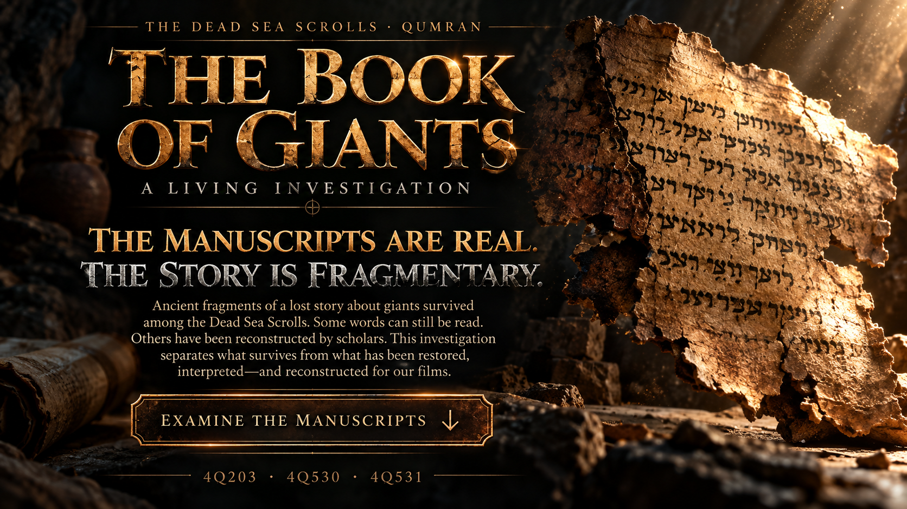
The Dead Sea Scrolls · Qumran
The Book of Giants
A Living Investigation
The manuscripts are real.The story is fragmentary.
Ancient fragments of a lost story about giants survived among the Dead Sea Scrolls. Some words can still be read. Others have been reconstructed by scholars. This investigation separates what survives from what has been restored, interpreted—and reconstructed for our films.
Examine the manuscriptsThe receipt · Dead Sea Scrolls
This ancient book really exists.
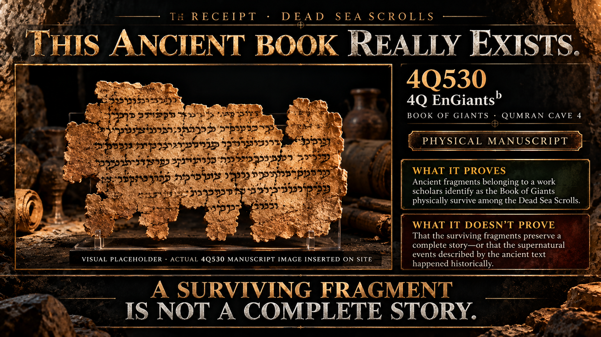
Physical manuscript record4Q5304Q EnGiantsb
Official archive record: Plate 437 · B-284596 · scanned infrared negative · recto.
View the genuine photograph at the IAA archive ↗ The IAA image is linked, not reproduced here, pending explicit public-display permission.What it proves
Ancient manuscript fragments belonging to a work scholars identify as the Book of Giants physically survive among the Dead Sea Scrolls.
What it doesn't prove
The surviving manuscripts do not establish that giants historically existed or that the supernatural events narrated in the ancient story occurred.
A surviving fragment is not a complete story.
How to read this investigation
Five levels. Five different claims.
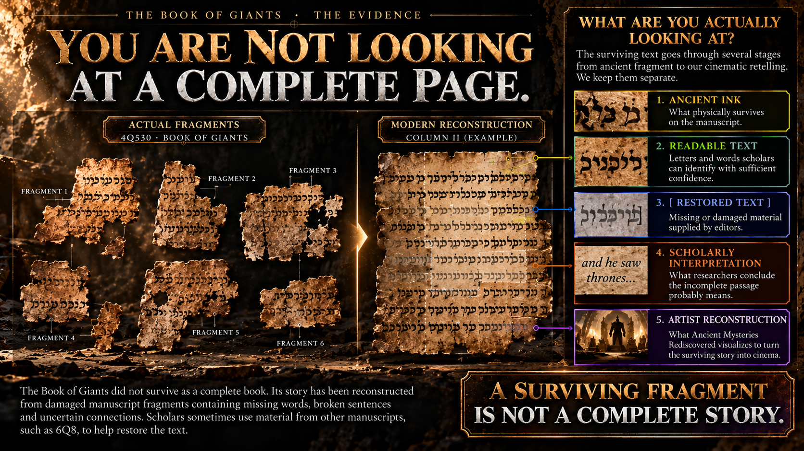
- 1
Ancient ink
What physically survives on the manuscript.
- 2
Readable text
Letters and words that can be read with sufficient confidence.
- 3
[Restored text]
Missing or damaged material supplied by editors.
- 4
Scholarly interpretation
What researchers conclude the incomplete evidence may mean.
- 5
Artist reconstruction
What Ancient Mysteries Rediscovered visualizes in order to transform the surviving narrative into cinema.
We will never present all five as the same thing.
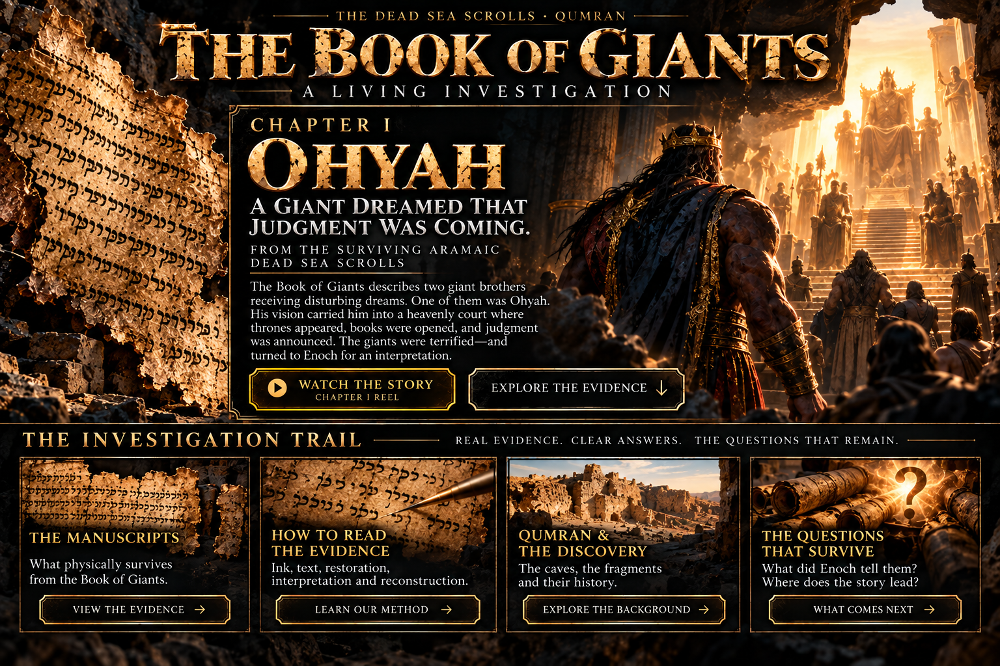
The Book of Giants · Chapter I
Ohyah
A giant dreamed that judgment was coming.
From the surviving Aramaic Dead Sea Scrolls
Two giant brothers, Hahyah and Ohyah, receive disturbing dreams. Ohyah's vision carries him into a heavenly judgment scene: the Ruler of Heaven descends, thrones are established, books are opened and judgment is pronounced. The giants are terrified—and send Mahaway to seek an interpretation from Enoch.
The manuscript behind the story
4Q530 · Ohyah's dream
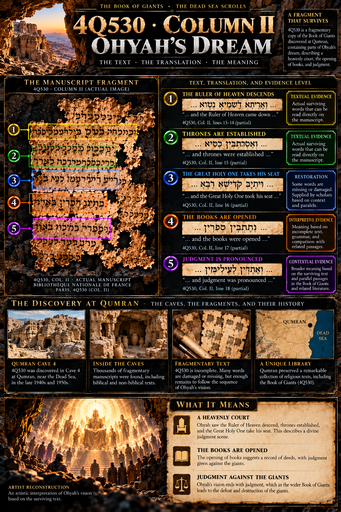
The sequence below is a cautious paraphrase of the episode described in specialist scholarship. It is not a transcription of the concept artwork.
- 01The Ruler of Heaven descendsReadable text / scholarly translation
- 02Thrones are establishedReadable text / scholarly translation
- 03The Great Holy One takes his seatPartly restored text
- 04The books are openedScholarly interpretation of fragmentary text
- 05Judgment is pronouncedJudgment context; object not overstated
Evidence boundary
The wider narrative concerns the giants and judgment. This display does not rewrite the damaged dream passage as the more explicit claim “judgment was pronounced against the giants.”
Compare the 4Q530 manuscript profile ↗Investigation pause
Who was being judged?
The manuscript gives us a heavenly court.
Books are opened.
Judgment is pronounced.
But the surviving fragment does not hand us a perfectly preserved modern explanation of every element in Ohyah's dream.
So look at what happens next.The giants' response
The giants were afraid.
Textual evidenceThey needed someone who could explain it.
Enoch
In the Book of Giants tradition, Enoch is the figure the giants turn to for interpretation.
Mahaway
The surviving narrative describes Mahaway being sent to seek Enoch. It does not preserve a literal gathering of kneeling giants before him.
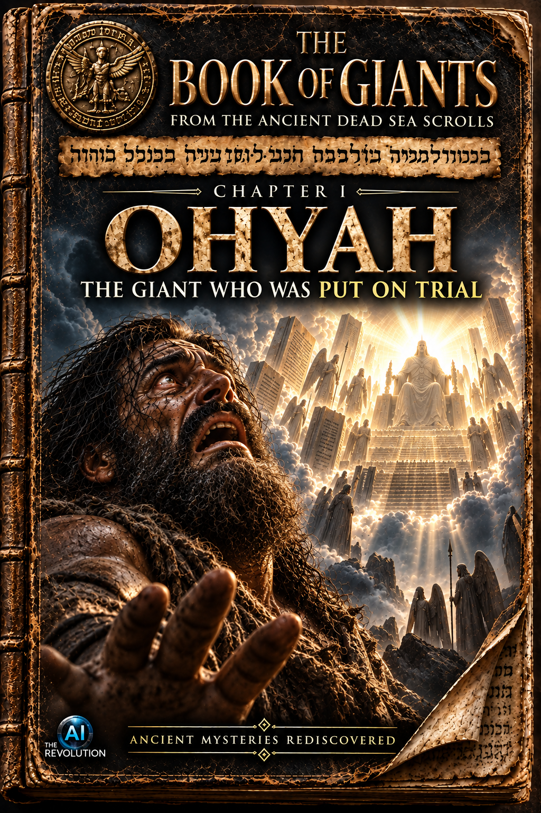
Watch the story
Story vs evidence
Artist reconstructionThe film turns a damaged narrative into one continuous encounter. The audit keeps its choices separate from what the manuscripts support.
Watch the Ohyah Reel ↗Qumran & the manuscripts
A fragment enters the modern record.
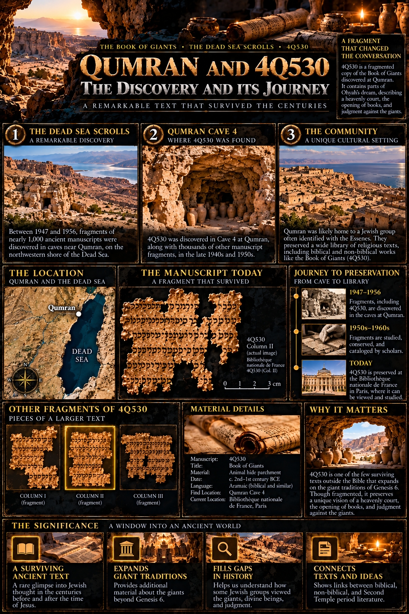
4Q530 · 4Q EnGiantsb
The Israel Antiquities Authority catalogues Plate 437, B-284596 as a recto image of manuscript 4Q530, identified as 4Q EnGiantsb.
Scanned infrared negative
The archive records the plate as photographed by Najib Anton Albina in June 1960. That is the image date, not a claim about when the fragments were discovered.
Aramaic and fragmentary
Specialist manuscript profiles identify 4Q530 as one of the better-preserved Book of Giants witnesses, while stressing that its surviving text remains incomplete.
The question that survives
The giants sent for Enoch.
What did Enoch tell them?
The giants sought an interpretation. Only fragments of the answer survive.
Part of his answer survived.Continue to Chapter II →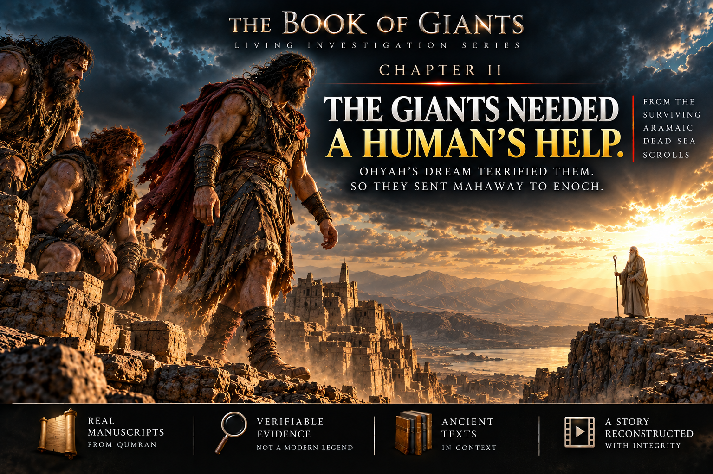
The Book of Giants · Chapter II
Enoch's Answer
The giants needed a human's help.
From the surviving Aramaic Dead Sea Scrolls
After Ohyah and Hahyah report disturbing dreams, the giants become afraid. The surviving Aramaic Book of Giants material describes Mahaway being sent to Enoch to seek an interpretation.
Did the ancient text really say that the giants turned to Enoch for help?
Follow the evidence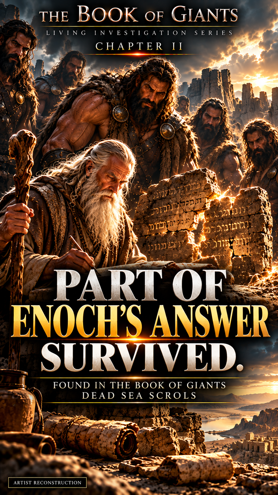
Chapter II investigation
Part of Enoch's answer survived.
Artist reconstructionThe artwork introduces the next question; it does not answer it. The evidence comes from verified 4Q530 and 4Q203 records and from critical scholarship presented separately below.
Generated markings are never extracted, identified, or quoted as evidence.
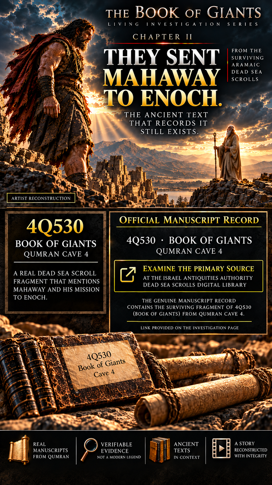
The journey receipt · 4Q530
They sent Mahaway to Enoch.
4Q530Book of Giants · Qumran Cave 4
What the text supports
- Ohyah and Hahyah report troubling dreams.
- The giants become afraid.
- Mahaway is summoned and sent.
- His destination is Enoch.
- The purpose is to obtain an interpretation of the dreams.
This is a conservative narrative summary of fragmentary material—not a fabricated quotation or uninterrupted transcription.
Examine the primary source ↗Israel Antiquities Authority · Dead Sea Scrolls Digital LibraryThe investigation advances
The giants had sent their messenger.
But did Enoch answer?
4Q203 preserves part of the response.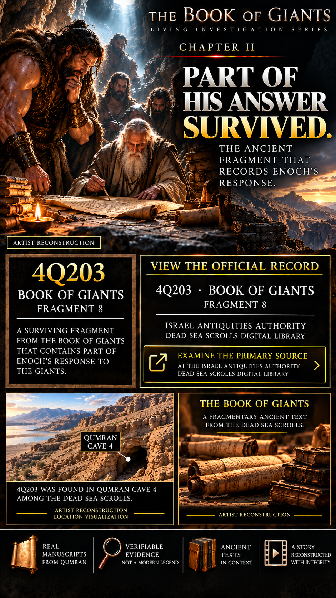
Enoch's answer receipt · 4Q203 Fragment 8
Part of his answer survived.
4Q203 Fragment 8 preserves material associated with a second tablet or letter connected with Enoch. It addresses the Watchers and refers to deeds and corruption involving them and their offspring.
The fragment is damaged. Portions of its destruction and judgment language have been editorially reconstructed by scholars; brackets in critical readings must not be silently removed.
Scholars understand Enoch's message as announcing condemnation, punishment, or destruction involving the Watchers and giants. The complete interpretation of Ohyah's dream does not survive intact.
The companion Reel turns this fragmentary textual material into a continuous dramatic encounter. Its dialogue and physical staging are not presented as a verbatim translation.
Record mapping: the IAA labels B-295415 “Plate 906, Frag 4” and identifies it as 4Q203. Marro's critical edition maps that imaged object to manuscript fragment 8.
Examine the primary source ↗Israel Antiquities Authority · Dead Sea Scrolls Digital LibraryA surviving fragment is not a complete speech.
The existence of an ancient manuscript establishes the existence of the ancient story—not the historical occurrence of its supernatural events.
Chapter II · Story vs evidence
What the film shows. What the text supports.
The cinematic dialogue is not a verbatim translation of 4Q203.
Watch the story · Chapter II
The giants needed a human's help.
Artist reconstructionThe Reel dramatizes Mahaway's mission and Enoch's fragmentary response while the investigation keeps the evidence boundaries visible.
Watch Chapter II ↗Where the investigation now stands
What the evidence supports—and what it does not.
Supported by the ancient textual tradition
- The Book of Giants existed in antiquity.
- Ohyah is named in the surviving material.
- Ohyah and Hahyah experience disturbing dreams.
- The giants react with fear.
- Mahaway is sent to Enoch seeking interpretation.
- Enoch is associated with a written response or tablet.
- Surviving material concerns the deeds and corruption of the Watchers and giant offspring.
- Judgment, punishment, or destruction forms part of the surviving and reconstructed textual context.
Some wording in the damaged passages depends on scholarly restoration and must remain labeled as such.
Not established
- The exact appearance or height of Ohyah or Mahaway.
- The exact appearance of Enoch.
- The precise physical setting of their encounters.
- That the assembled giants physically stood or knelt before Enoch.
- Exact continuous dialogue used in the cinematic reconstruction.
- The historical occurrence of the supernatural events described by the ancient story.
The existence of an ancient manuscript establishes the existence of the ancient story—not the historical occurrence of its supernatural events.
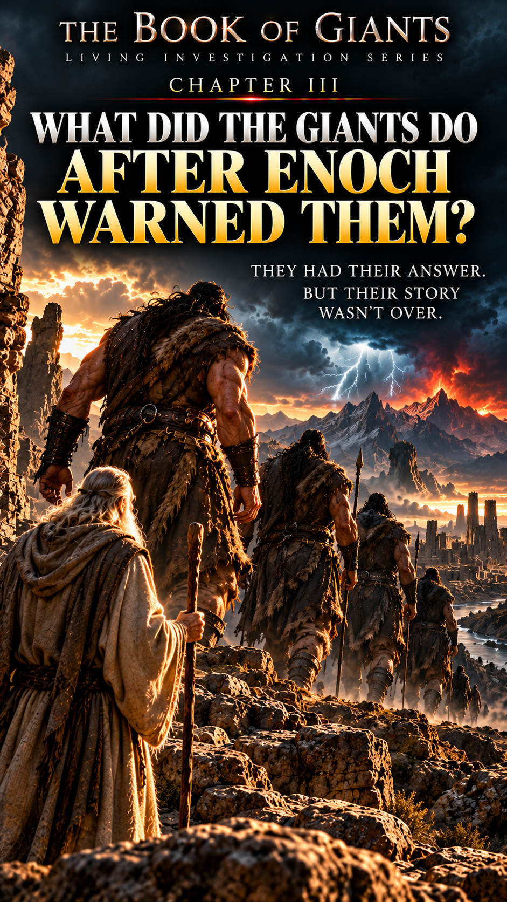
The question beyond Chapter II
What did the giants do after Enoch warned them?
They had their answer. But their story wasn't over.
Chapter III investigation not yet availableSources
Follow the evidence yourself
Dead Sea Scrolls Digital Library · 4Q530 and 4Q203
Used for: official manuscript identifiers, imaging metadata, and archive locators. The records are linked rather than reproduced.
Dream narratives in the Aramaic Dead Sea Scrolls
Used for: the role of dream-vision revelation and the literary setting of the Book of Giants among Aramaic scrolls.
Read the SBL Press open-access volume ↗A Handbook of the Aramaic Scrolls from the Qumran Caves
Used for: the 4Q530 and 4Q203 manuscript profiles, content synopses, Mahaway's intermediary role, and the indictment preserved in the second-tablet material.
Read the open-access handbook ↗Reading the Dead Sea Scrolls: Essays in Method
Used for: methodological context for distinguishing material texts, literary traditions, and later interpretation.
Read the SBL Press volume ↗The Book of Giants: A Critical Edition of the Aramaic Fragments
Used for: recent specialist control on the fragmentary witnesses, the mapping of IAA image B-295415 to 4Q203 Fragment 8, textual restoration, and the limits of reconstructed arrangements.
Read the open critical edition ↗Image-rights note: the IAA records are linked rather than reproduced because the archive's current terms require express permission for public display. The Chapter II artwork remains clearly labeled reconstruction and does not substitute for the genuine manuscript images.